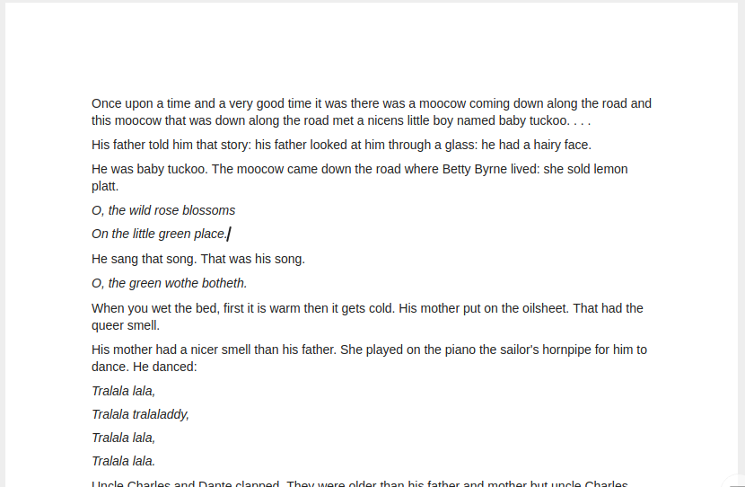
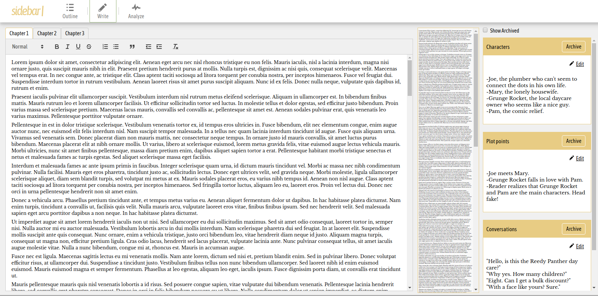

Sidebar is a writing app designed for authors. It encourages outlining, note-taking, rapid iteration, and big picture thinking.
Sidebar is a writing app designed for authors. It encourages outlining, note-taking, rapid iteration, and big picture thinking.
Word processors (like Microsoft Word) are good at formatting documents. But the writing experience is something like this:
It's...blank. You're staring at a blinking cursor and hoping your book will write itself. It's okay, we've all been there. The problem isn't your talent or training - the problem is that real authors don't write like this.
Sidebar is different. It's an app for the writing process: research, outline, development, and analysis. The only thing it doesn't do is advanced formatting - but that's what your word processor is for.
Sidebar looks like this:
On the left is a simple word processor, with a row of tabs above it so you can switch between chapters with a single click. Next to it is a zoomed-out view of your chapter (a "mini map"), with a built-in magnifier so you can scan your chapter on the fly. And on the right is your outline, containing notes, plans, citations, and anything else you want to keep handy while you write.
Sidebar is all about conquering the blank page, and it's very good at it.
Other features include:
Sidebar is still under construction. All your work is saved in the browser, but you shouldn't rely on it. Upcoming features include: